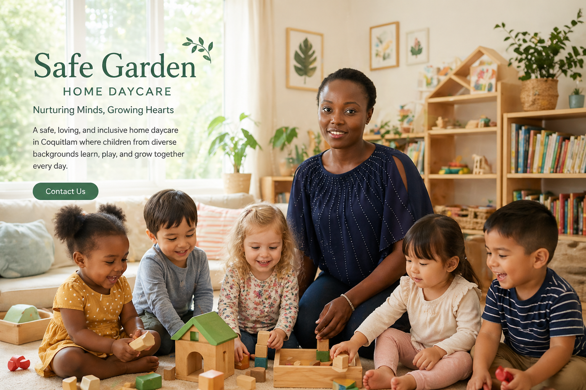
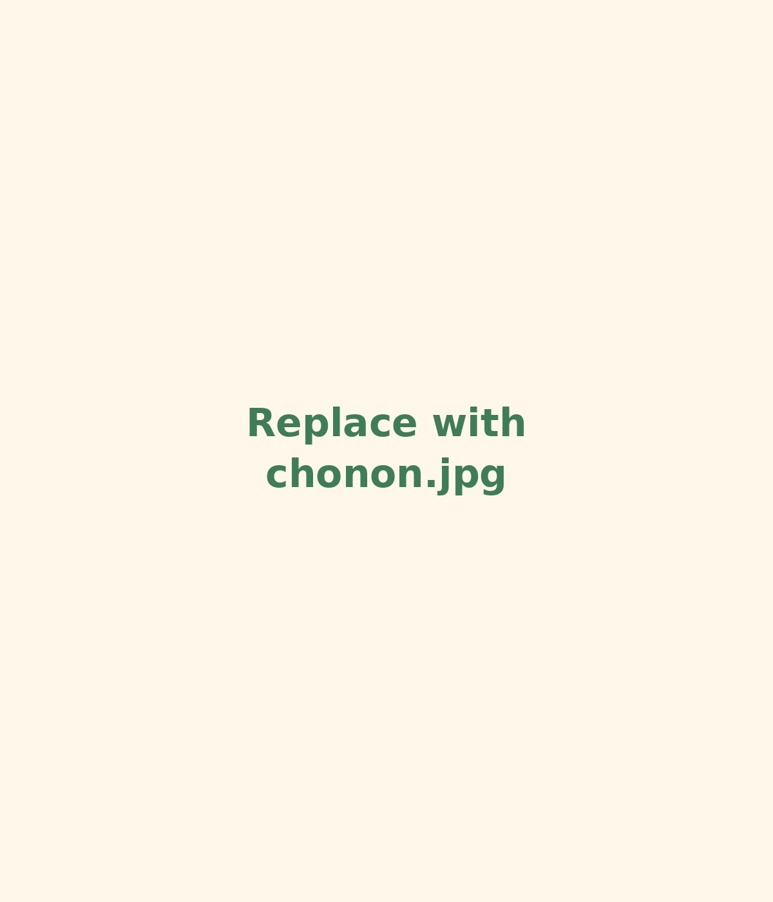
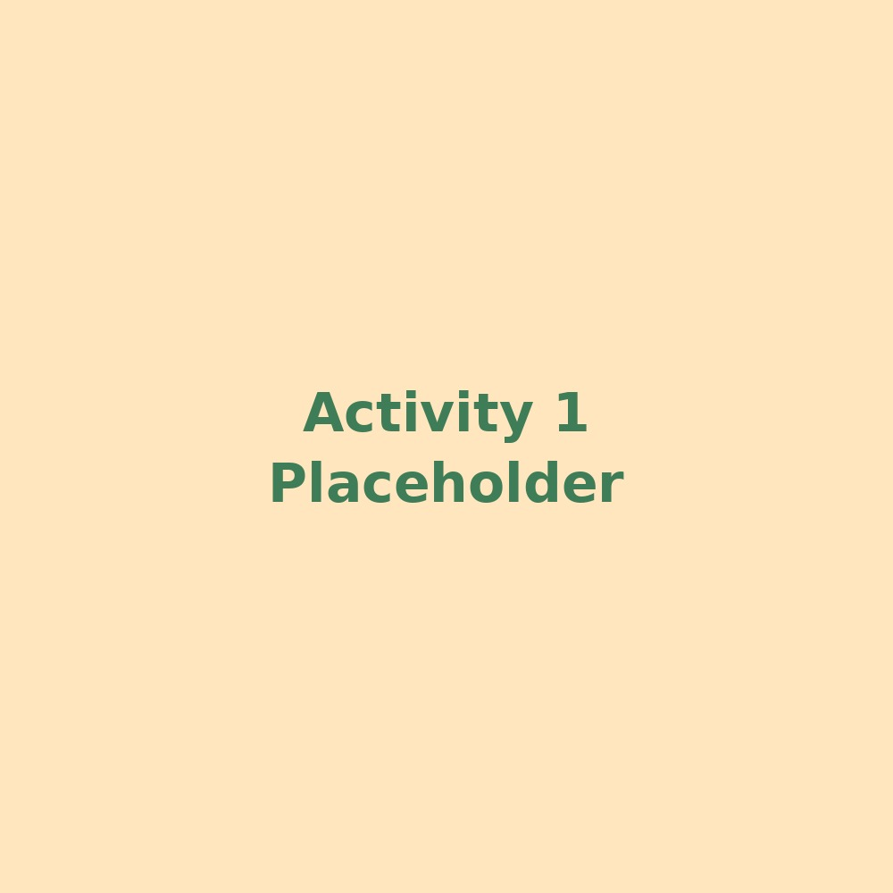
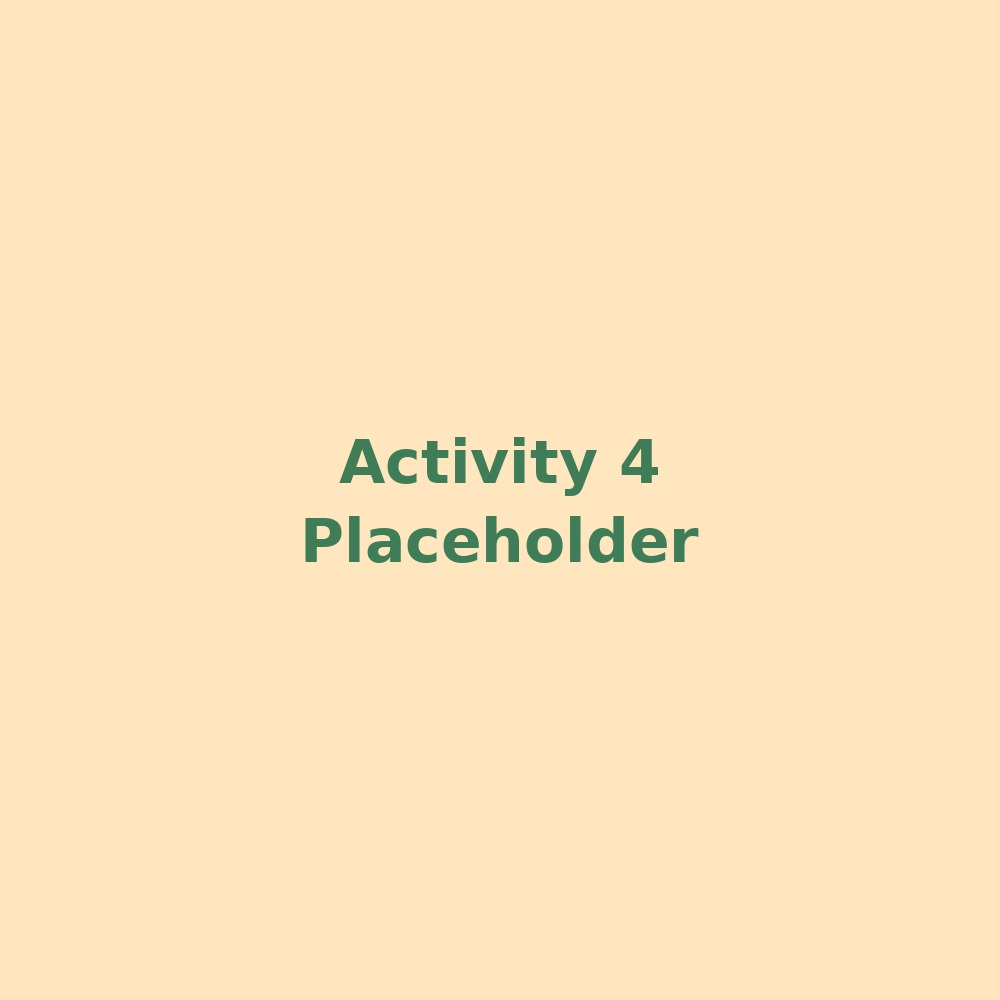

Kind multi-age learning
Older children naturally help younger ones, creating a caring environment where children learn kindness and confidence.
Coquitlam Home Daycare | Ages 1-5
Safe Garden Home Daycare is a warm, multi-age home daycare led by Chonon, offering patient care, creative activities, and a kind environment where children can grow with confidence.

★★★★★
“My child is learning so much at daycare. The older children are very kind and supportive, and the teachers are always there for us.”
Parent of an 18-month-old child

Meet the Owner
Chonon creates a safe, warm, and loving environment where every child is treated with patience and respect. Families appreciate her kindness, her experience with young children, and her ability to support each child’s unique personality.
Originally from Côte d’Ivoire, Chonon speaks French and brings a rich multicultural perspective to daily childcare. Her values of kindness, compassion, and respect help children feel loved, supported, and confident.
Why Families Choose Us
Parents choose Safe Garden Home Daycare because children are supported socially, emotionally, physically, and creatively.
Older children naturally help younger ones, creating a caring environment where children learn kindness and confidence.
Craft time, play, and hands-on activities give children experiences that are not always easy to create at home.
Daily activities are designed to nurture both mental and physical well-being in a safe home setting.
Safe Garden Home Daycare offers caring, high-quality childcare at a price that families describe as more affordable.
Our Program
Our multi-age program helps children learn from each other while receiving age-appropriate care and support. Children build social skills, independence, creativity, and confidence through everyday routines and play.
Book a Tour
Add assets/activity1.jpg
Add assets/activity4.jpgParent Voices
★★★★★
“My child is almost 18 months old, and since it’s a multi-age class, the older children are very kind and supportive. My child is learning so much at daycare thanks to them.”
Parent of an 18-month-old★★★★★
“Although my child moves around three times more than others, Chonon and the teachers are always there to support us.”
Safe, patient support★★★★★
“There are many activities that nurture both mental and physical well-being. They also have craft time, offering experiences we couldn’t easily do at home.”
Creative daily activitiesFAQ
We provide care for children ages 1-5.
Please fill out the form below. We will get back to you as soon as possible.
Yes. Chonon speaks French and naturally introduces children to multicultural and language exposure in daily life.
Yes. Families describe Chonon and the teachers as patient and supportive, including for very active children.
Book a Tour
Interested in Safe Garden Home Daycare? Fill out this quick form and we will get back to you soon.